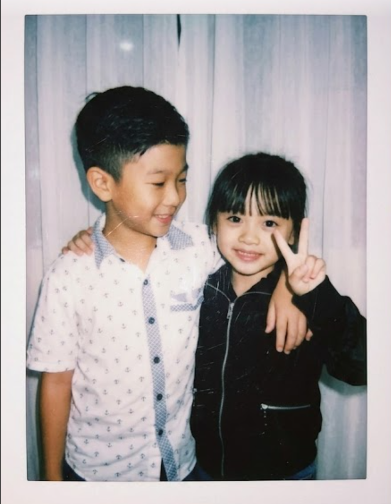
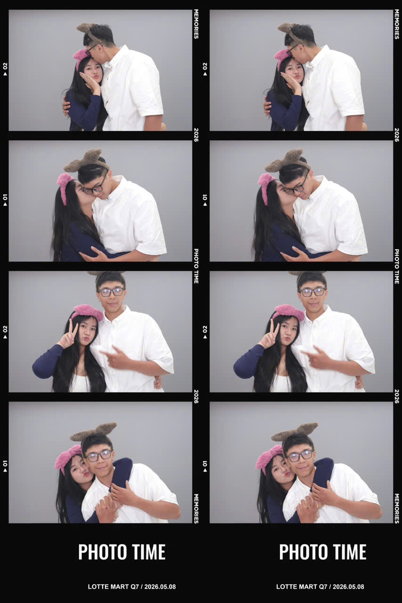
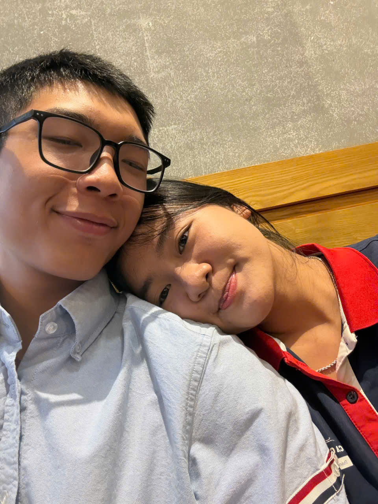
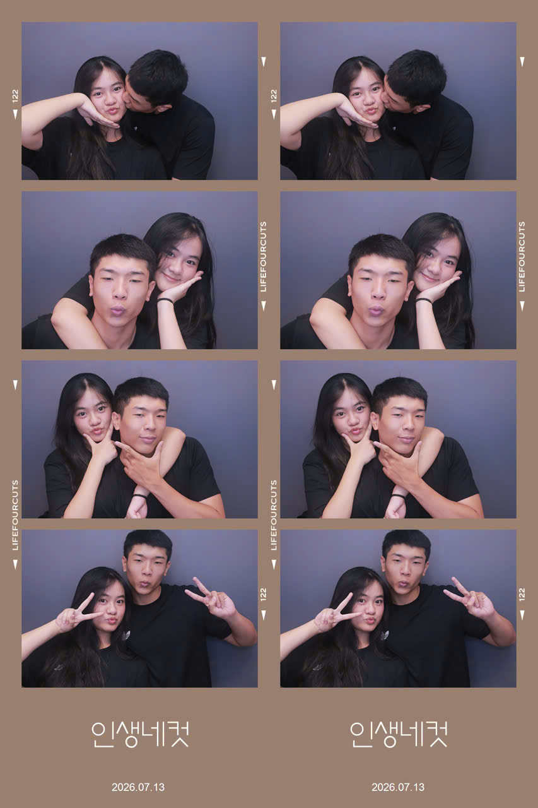
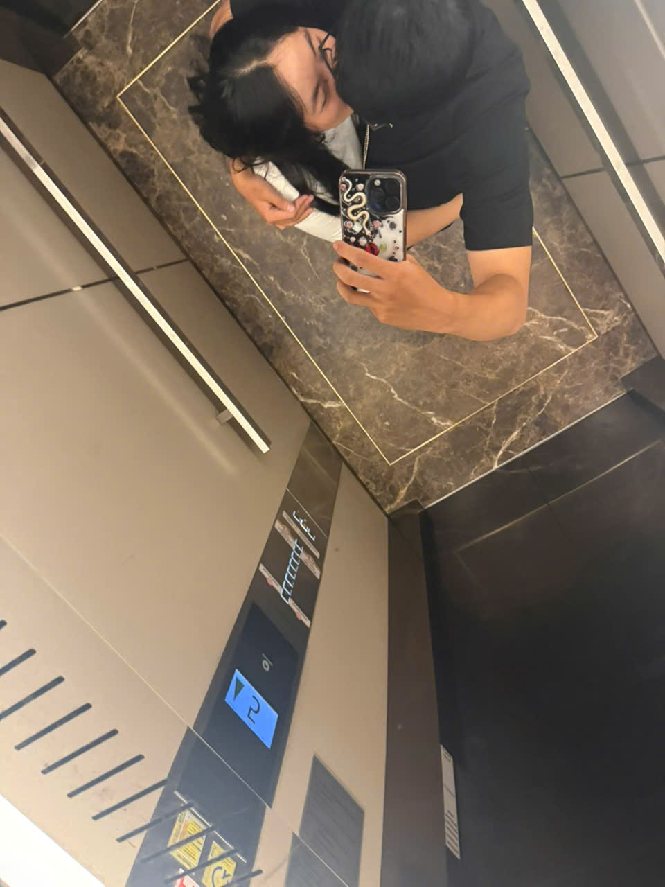

Cảm ơn em bé iu đã cho anh cơ hội được nắm tay em
Chạm trái tim để xem tâm tư của anh i bxa iu
Em có biết anh yêu em nhiều lắm hăm

images/anh1.jpg
Gửi đến em người con gái ngoài mẹ nhưng lại là người anh yêu thương nhứt
Cảm ơn em 100 ngày qua đã nắm tay anh, đã đồng hành cùng anh. Anh từng nghĩ là thật nhảm nhí khi thấy các cặp đôi lại tặng quà khi anni 1 tháng hay 100 ngày, nhưng đến khi cùng em bước trên đoạn đường này anh mới nhận ra ở bên 1 người lại nhiều trắc trở đến như vậy. Nhưng điều đó lại làm anh yêu em hơn, trân trọng em hơn và cố gắng nhiều hơn trong mối quan hệ của 2 đứa mình, vì anh chợt nhận ra hạnh phúc nó hong phải nằm ở thứ gì quá cao siu mà hạnh phúc của anh là được yêu và thương em , được nghe em nói và được nói anh yêu em . Anh gửi thư tặng quà trước cho vợ iu nghen , tại anh cũm hăm bic lần gặp típ theo là khi nào nữaa .
Xin trao em tất cả sự dịu dàng của anh
Cảm ơn em đã cho anh cơ hội được yêu em, được quan tâm em, chăm sóc em, được thương em, được em ôm, em thơm má; cảm ơn em đã nhõng nhẽo bướng bỉnh với anh, cảm ơn em những lần suy nghĩ xấu cho anh, cảm ơn những cái áo em tặng, cảm ơn lá thư em âm thầm chuẩn bị cho anh. Thật sự mà nói thì anh chưa từng thấy phiền phức hay chán ghét bất cứ điều gì về em cả vì anh hiểu tất cả chỉ vì yêu và thương anh thoi. Anh lúc nào cũng yêu và thương em hết ,yêuu cái đồ đáng yêu hì sogi ebee nghen làm dì mà rep tin nhắn chậm , làm dì mà giấu giấu em bữa h gòi bày đặc cho chọn 3 hay 5 nữa . Bửa h là anh ngồi viết thư học cách vẽ tim bằng code mà có tên bxa nè , dới mua đồ make up cho ebe với gửi gắm tình yêu nhỏ xíu vô mấy lá thư nhưng đầy sự chân thành của anh ạ.
Đạt yêu Thuỳ Lâm !
Bxa có bic tại sao anh lại yêu và thương em hong ?

Đặt ảnh vào file images/tl1.jpg
Anh và em từ vài lời chúc rồi dần thành những lần cười nói , hỏi han và quan tâm nhau
Oxa nhận ra mình thích em từ lúc thức muộn thêm tí để nhắn tin với em để dỗ em . Chẳng nhớ rõ là ngày nào anh chỉ nhớ là buổi sáng được em chào buổi sáng , tối thì chúc nhau ngủ ngon , chỉ mong mỗi một dòng thông báo trên điện thoại là của em nhắn cho anh . Và chẳng muốn em nhắn tin với chàng trai nào, bất giác khó chịu trong lòng khi em khoe ảnh họ và hỏi là : "người này có được hong". Cha già bớt sến , nít ranh tai biến , gòi cứ thế mà cười nói với nhau đủ thứ chuyện trên trời dưới đất . Người thì thức khuya thêm một xí người thì cố gắng thức sớm hơn cũng để chào buổi sáng và cùng trò chuyện rồi chúc nhau ngủ ngon mỗi ngày cứ thế mà tạo ra chuyện tình đôi ta .

Đặt ảnh vào file images/tl2.jpg
Những ngày đầu ngại ngùng, tim đập loạn nhịp khi ở cùng nhau, những lần cả 2 đều nghĩ là mình không được thương mặc dù anh và em đều yêu và thương nhau rất nhiều.
Những lần em nói em bùn, em khóc, em bị ốm đau hay bệnh lòng anh chợt nhói lên 1 nhịp thấy xót em vô cùng điều đó làm anh nhận ra anh đã yêu và thương em rất nhiều và em cũm như z. Em nói anh hong yêu hong thương anh nghe chỉ thấy em khờ thấy thương em nhìu hơn thui , em từng nói với anh là: " em hậu đậu chiên cá thì sống , đi hong nhìn đường , hay vấp té hậu đậu thì anh có yêu em hong " nhưng chính điều em cho là hong hoàn hảo về bản thân mình lại là điều làm trái tim anh rung thêm 1 nhịp , làm anh thương em hơn đó! chúng ta cũng chỉ là hai mảnh ghép đang cố gắng để hoà hợp mà thoi

Đặt ảnh vào file images/tl2-5.jpg
Hai tháng tràn ngập tình iu và nỗi nhớ nhung, luôn có hình bóng nhau trong tâm trí kể cả khi hong gặp.
Anh nhớ những cuộc gọi dặn nhau ngủ ngon , nhắn tin đến mức mắt mở hong lên ngủ quên nhưng vẫn cố xíu nữa để được trò chuyện cùng người anh thương , những lần em bực bội nhõng nhẽo khi bị anh ghẹo, và những phút giây bận rộn trong cuộc sống mà vẫn nhớ nhung nhau mỗi ngày . Sau 2 tháng, qua những lần cười nói những lần làm tổn thương thì anh hiểu được rằng chẳng ai muốn làm người mình thương buồn hết tất cả chỉ là sự vô tình thoi . Cảm ơn em đã tha thứ đã bao dung anh vô số lần , cảm ơn em đã cho phép anh được nắm tay em , cảm ơn vì đã tin tưởng anh . Em bé tuy nhỏ nhưng lại có võ và là tất cả trong anh 💒

Đặt ảnh vào file images/tl3.jpg
Cảm ơn em đã đến bên anh nắm tay anh hết 100 ngày qua
Anh yêu em, yêu luôn những gì em cho là xấu xí của bản thân mình, anh nói anh yêu em thì anh chắc chắn 1 điều là anh yêu hết tất cả mọi thứ về em. Anh dám chắc chắn 1 điều là vì em anh có thể từ bỏ mọi thứ vui xung quanh , anh yêu bxa nhiều hơn những gì anh có thể nói thành lời , em là món quà lớn nhất là vật vô giá , và em là ánh sáng của đời anh. Nhiều lúc em ôm sau xe anh thấy mình thật hạnh phúc và muốn nói ra thật nhiều điều nhưng miệng chỉ cười và thốt ra từ anh yêu em. Mong em cứ nói ra bất cứ điều gì với anh như em bé mà chẳng cần suy nghĩ gì ❤️